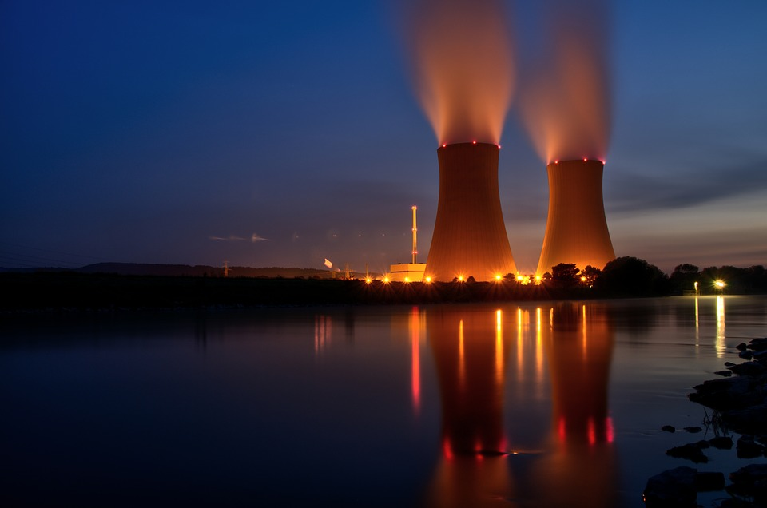

Climate Change and Nuclear Power
Due to several large catastrophies that have happened due to nuclear power plants, the public tends to be hesitant in allowing nuclear power plants to be constructed. Chernobyl, a nuclear power plant that melted down in 1986, is still radioactive. The land is contaminated by radioactive material with a halflife of 24,000 years. While the horrific Chernobyl catastrophy has people worried, modern reactors do not use the same technology. Modern nuclear reactors are designed to not meltdown in the same way that chernobyl did. With new and constantly evolving technology, the modern Nuclear reactor is a safe and clean alternative to fossil fuels, coal, and oil.
Oil, natural gas, and coal are large industries. Hundreds of thousands of people work for those industries, and if more nuclear reactors were built, it would threaten their jobs as well as those entire industries. While it is true that oil rigs may close down due to switching to nuclear power, the average oil rig requires 60 workers, while the average nuclear power plant needs at least 500. Along with this, the oil industry has been decreasing in size due to oil running dry. In 2018 there were around 2000 oil rigs, while in 2020 the number dropped to 1000. The nuclear industry can continue to work long after the oil industry can. Uranium deposits are plentiful, and we can continue to power nuclear plants long after those are depleated by using thorium.
The political implications of using nuclear reactors as a way to combat climate change are similar to those of the social and economic issues. Politicians have a hard time backing building more reactors when a large number of people are worried about the danger of the reactors or the economic fallout of decreasing jobs in the oil and gas industry. Political backing is important to build and support a growing nuclear power grid, and many nations are already on board. 70% of France's power comes from nuclear reactors. With only 20% of the US's power being from nuclear and 20% being from renewable sources, increased political backing could show a support for green energy.
 Nuclear power may not be a perfect solution, and many countries are phasing it out in an effort to focus on green fully renewable energy such as solar and wind, Nuclear power plants can be an important low emission strategy to supply energy to the US power grid and reduce the need for fossil fuels. With a combination of wind, solar, and nuclear power the US can be supported by a low emission power grid with very little economic loss.